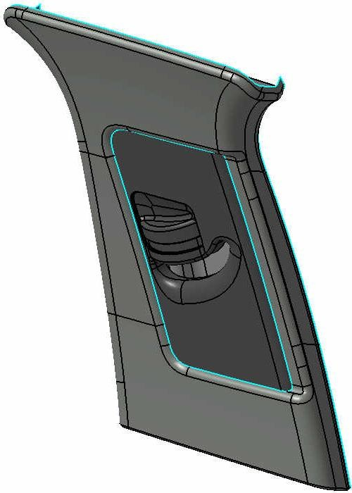
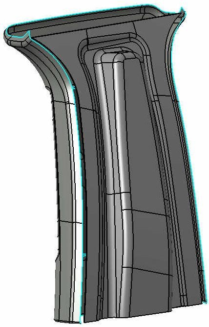
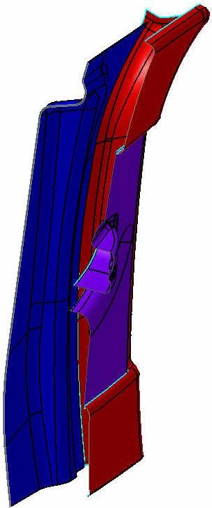
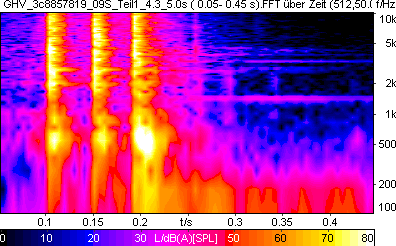
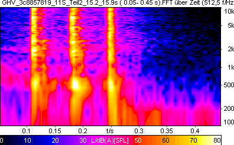

BT-LAH-Vorlage-Basismodul-TE-V15_Stand-05.2010
Bauteil-Lastenheft
mechanische ZSB Gurthöhenverstellung
[redacted-person]: LAH.4M0.857.AE
|
|---|
|
|
|
|
|
Only applies to English translation: [redacted-person] translation is believed to be accurate. In case of discrepancies the German version shall govern.
© [redacted-person]
Abstimmung
Änderungsdokumentation
Inhaltsverzeichnis
Das vorliegende Bauteil-Lastenheft (BT-LAH) ist angelehnt an die Struktur des VDA-
[I: BT-LAH-4]
[redacted-person] 2 (www.vda-qmc.de) und beschreibt komponentenspezifische Anforderungen. Das VDA-Modul 1 wird durch die [redacted-co]99000 abgebildet und beschreibt komponentenübergreifende allgemeine Anforderungen zur Leistungsbringung im Rahmen der Bauteilentwicklung.
[I: BT-LAH-13]
Die vom Auftragnehmer zu erfüllenden Anforderungen sind in der Identifikationsnummer (z. B: [A: BT-LAH-1]) grundsätzlich durch ein "A" gekennzeichnet. Textteile, die durch ein "I" gekennzeichnet sind, sind Informationen zum besseren Verständnis des BT-LAH. Gibt es keine Identifikationsnummer oder keine Kennzeichnung mit "A" bzw. "I", so handelt es sich ebenfalls um eine Anforderung.
[A: BT-LAH-5]
Das vorliegende Bauteil-Lastenheft und die Norm [redacted-co]99000 ff. sind zusammen Grundlage des zu erbringenden Leistungsumfanges des Auftragnehmers.
[A: BT-LAH-6]
Dieses BT-LAH beschreibt Leistungen, Anforderungen, Prüf- und Erprobungsbedingungen, die das zu entwickelnde Produkt und der Auftragnehmer erfüllen müssen.
Vor dem Hintergrund neuer Fahrzeugprojekte, basierend auf der Modulstrategie, soll eine neue mechanische Gurthöhenverstellung entwickelt werden, welche eindeutige Verbesserungen hinsichtlich Sicherheit, Komfort, Gewicht, Akustik, Abmessungen und Anmutung ergeben soll.
Das vorliegende BT-LAH dient zur Festlegung der technischen Daten und Randbedingungen für den zu beschreibenden Leistungsumfang.
Im Rahmen der Entwicklung sind folgende Punkte zu berücksichtigen:
Kostenoptimierung
Erfüllung FMVSS 201
Qualitätsverbesserung
Preiskonstanz
neue gesetzliche Vorgaben
Recyclingkonzept
[redacted-person] entsprechen den Preisen zum SOP inklusiv der erforderlichen Optimierungen und Anpassungen.
Die zu entwickelnde Komponente muss sämtliche gesetzliche und konzerninterne Anforderungen erfüllen.
Entwicklungsziel ist eine neue mechanische unterputz Gurthöhenverstellung, die hinsichtlich der Bauhöhe, gegenüber dem aktuellen Stand der Technik, flacher ist.
Die neue Gurthöhenverstellung muss die Anforderungen der FMVSS 201 und der TL471 erfüllen.
Bezeichnung des Zielfahrzeuges: siehe projektspezifisches [redacted-person]: siehe projektspezifisches Lieferumfangslastenheft
[A: BT-LAH-21]
[A: BT-LAH-22]
Zielmarkt: alle
Die relevanten Gesetzesanforderungen der Zielmärkte sind zu erfüllen.
[A: BT-LAH-25]
[A: BT-LAH-26]
Lieferumfang ist die [redacted]umfasst:
die Ausarbeitung und Erprobung der für die einwandfreie Funktion notwendigen Einzelkomponenten,
die Definition und Abstimmung der im Umfeld notwendigen Adaptionen, insbesondere die Schnittstelle zum Rohbau und zur Verkleidung
die Erstellung einer Zeichnung, aus der alle relevanten Daten entnommen werden können, und den Vorgaben [redacted-co] genügen,
die Bereitstellung von Musterteilen für die Bauteilversorgung der Prototypenstände (siehe Abs. 2.6.1)
die komplette Ausarbeitung einer Fehlermöglichkeits- und Einflussanalyse (FMEA) entsprechend den Anforderungen aus dem [redacted-person] ([redacted-co]99000).
[A: BT-LAH-31]
Es gelten die Anforderungen des Kapitels "Entwicklungs- und Lieferumfang" der [redacted-co]99000.
[A: BT-LAH-714]
[redacted-person] verpflichtet sich bei der Integration des Bauteiles beim Auftraggeber mitzuwirken.
Für [redacted-co] gilt:
[A: BT-LAH-936]
Es gelten die Anforderungen der Konzeptverantwortungsvereinbarung. Für das / die folgende (n) Bauteil(e) wird die KV-Quote für den Lieferanten wie folgt vereinbart:
Bauteil (Teilenummer): 4M[redacted-phone]
KV-Quote: 90%
[redacted-person] gilt:
[I: BT-LAH[redacted-ext]]
Im Rahmen der Forward-[redacted-person] wird über das Neuteilinformationsblatt die KV-Quote vorgegeben, welche im Rahmen der Vergabeverhandlungen vereinbart wird.
Für die mechanische Gurthöhenverstellung existiert der markenspezifische [redacted-person]. Für die Marken gilt folgende Aufteilung:
4M[redacted-phone]A: GHV ohne Komfortfeder: [redacted-person] 4M[redacted-phone]: GHV mit Komfortfeder: Marken [redacted-co] und VW
[redacted-person] verpflichtet sich, alle Anforderungen dem Angebot als vereinbarte
[A: BT-LAH-33]
Beschaffenheit zugrunde zu legen. Abweichungen vom BT-LAH sind dem Angebot beizufügen und zu dokumentieren.
[A: BT-LAH-34]
Mit dem Angebot sind vom Auftragnehmer folgende Unterlagen den technischen oder zuständigen Fachabteilungen des Auftraggebers zur Prüfung vorzulegen:
[A: BT-LAH-35]
Liste der offenen Punkte und Abweichungen vom BT-LAH (analog zur Struktur des BT-LAH)
[A: BT-LAH-36]
Pflichtenheft
[I: BT-LAH-837]
[redacted-person] eines Auftragnehmers muss dieser nach den konzernweit abgestimmten Bewertungskriterien des Auftraggebers (bauteilbezogene Beurteilung von Entwicklungspartnern) auditiert und zugelassen sein. Dazu ist es notwendig, dass der Auftragnehmer über Erfahrung aus ähnlichen Projekten sowie über nachweisbar ausreichende Entwicklungskompetenz bzw.
Entwicklungskapazitäten und über die geforderte Ausrüstung im Versuch, Labor, CAD-Bereich und Prototypenbau verfügt (insbesondere bei sicherheitskritischen Bauteilen).
[A: BT-LAH-38]
[redacted-person], die auch Engpässe bei anderen Aufträgen des Auftragnehmers berücksichtigt
Projektplan gemäß [redacted-co]99000
Projektzeitplan gemäß [redacted-co]99000
Montage- und Befestigungskonzept
Angaben zu Eigen- und Fremdanteil (Entwicklung, Produktion)
Erprobungsplan/Testmanagement
[A: BT-LAH-41]
[A: BT-LAH-42]
[A: BT-LAH-43]
[A: BT-LAH-44]
[A: BT-LAH-45]
[A: BT-LAH-46]
Werkstoffkonzept aller Einzelbauteile (nur Werkstoffe, keine Reinstoffangaben erforderlich)
[A: BT-LAH-47]
QM-Plan
Verwertungskonzepte nach [redacted-co]91102, Beiblatt 3
[redacted-person] durchzuführende Simulationen
[A: BT-LAH-48]
[A: BT-LAH-49]
Für [redacted-co] gilt:
[A: BT-LAH[redacted-ext]]
Nachweis, dass das Anforderungsprofil bereits erfüllt ist oder erfüllt sein wird, z.[redacted-person] einen Qualifizierungsnachweis über eine AVON-Schulung.
[I: BT-LAH-59]
Der aktuelle Terminplan wird von der Beschaffung des Auftraggebers den Anfrageunterlagen beigefügt.
[redacted-person] sind in den Projektzeitplan einzuarbeiten.
[A: BT-LAH-60]
Die projektspezifischen Meilensteine sind dem Terminplan der Anfrageunterlagen zu entnehmen
[redacted-person] der Terminpläne des Einkaufs sind Terminpläne für die Bauteilentwicklung zu erstellen, die folgende Kerntermine berücksichtigen:
Für die 2. Baustufe müssen funktionsgerechte Teile vorliegen
VFF erste Teile aus Serienwerkzeug
1 Jahr vor SOP müssen Teile für die Freibewitterung vorhanden sein
Zur PVS werkzeugfallende- und grundvermessene Teile aus Serienwerkzeugen in freigegebenen Serienwerkstoffen
1 Monat vor 0-[redacted-person] mit mind. Note 3
([redacted-person] sind für die Prüfung 6 Wochen vorgesehen)
1 Monat vor der 0-Serie müssen alle für die Baumustergenehmigung vorliegenden Prüfungen abgeschlossen sein und die Baumustergenehmigung vorliegen
([redacted-person] sind für die Prüfungen 12 Wochen vorgesehen)
[A: BT-LAH-73]
[redacted-person] liefert im Rahmen der Fortschrittsberichte die erforderlichen Daten für folgende Metriken:
Meilensteintrendanalyse basierend auf den vereinbarten Meilensteinen
[A: BT-LAH-74]
[A: BT-LAH-75]
Vergleich der geplanten und der tatsächlichen Dauer der Aktivitäten und Arbeitspakete basierend auf dem Projektzeitplan
Fehlerverfolgung inkl. Priorisierung und Bearbeitungsstatus
[A: BT-LAH-76]
[A: BT-LAH-77]
Weitere projektspezifische technische Metriken, die kritische Aspekte messen, werden zwischen den Projektverantwortlichen des Auftragnehmers und des Auftraggebers abgestimmt.
[redacted-person] mit der Fachabteilung sind zusätzlich zum Abs. 2.6.1 je geändertem Baustand minimal 4 [redacted-person] für interne Erprobungszwecke bereitzustellen.
In Absprache mit den zuständigen Fachabteilungen sind vom ZSB [redacted-person] und Folien für Präsentationszwecke zu erstellen.
[A: BT-LAH-93]
[redacted-person] müssen bei der Lieferung dem jeweils aktuellen Entwicklungsstand entsprechen.
[A: BT-LAH-94]
[redacted-person] muss mit dem aktuellen Stand (HW, SW, EEPROM, Mechanik) gekennzeichnet werden.
[A: BT-LAH-838]
[redacted-person] von 3D-CAD-Daten (digitaler Prototyp) hat zu einem definierten Zeitpunkt vor Lieferung der Musterteile zu erfolgen.
Für [redacted-co] gilt:
[A: BT-LAH-80]
Mindestens für alle geplanten Baustufen und Erprobungsfahrzeuge ist jeweils ein [redacted-person] anzuliefern.
Für [redacted-co] gilt:
[I: BT-LAH-839]
[redacted-person] über Fahrzeug-Anzahl und Aufbautermin (virtuell und physikalisch) sind unter Abschnitt "Terminplan und Meilensteine" festgelegt bzw. dem Prototypenbauplan zu entnehmen.
[A: BT-LAH-924]
Für [redacted-co] gilt:
[redacted-person] für Änderungen laut [redacted-co]99000 Kapitel "Änderungsmanagement" erforderliche Musterteile sind erforderlich beispielsweise bei packagerelevanten Änderungen an Bauteilen, die in Vorbau und Unterflurmodellen dargestellt werden.
[I: BT-LAH-925]
Für [redacted-co] gilt:
[redacted-person] können sein:
Geometrieänderungen
Wechsel des Werkzeugsentwicklungsstandes (Prototypen-Werkzeug, Serien-Werkzeug)
[I: BT-LAH-81]
[redacted-person] gilt:
Im BT-LAH wird nur die Anzahl der Teile, die bis zur Erteilung der Baumustergenehmigung notwendig sind, aufgeführt. Ist keine Baumustergenehmigung erforderlich, so wird die Anzahl der bis zur E-Freigabe benötigten Teile aufgeführt.
[redacted-person] gilt:
Die genannte Anzahl an Teilen ist Bestandteil des Entwicklungsumfanges und der Entwicklungskosten. Musterteile sind dem Auftraggeber frei Haus anzuliefern.
[redacted-person] gilt:
[A: BT-LAH-91]
[I: BT-LAH-92]
Alle darüber hinaus benötigten Prototypen für dieses Fahrzeugprojekt werden durch die Beschaffung angefragt und verhandelt und seitens des Auftraggebers (Fachabteilung oder Versuchsbau) budgetiert.
[redacted-person] ist typprüfpflichtig: Nein
[A: BT-LAH-98]
[A: BT-LAH-99]
Bei typprüfpflichtigen Bauteilen sind zum Erfüllungsnachweis der gesetzlichen [redacted-person] in Absprache mit der zuständigen Typprüfabteilung des Auftraggebers ggf. in Anwesenheit des [redacted-person] bzw. der Behörde durchzuführen und zu dokumentieren.
[redacted-person] im Fahrzeug ist mit der entsprechenden Fachabteilung abzusprechen.
[A: BT-LAH[redacted-ext]]
Für selbstzertifizierungsrelevante Teile muss eine gesetzeskonforme Dokumentation der geforderten meist experimentellen Nachweise der Gesetzeserfüllung durchgeführt werden.
[A: BT-LAH[redacted-ext]]
Fahrzeugteile / Komponenten (z. [redacted-person], Spiegel und weitere), welche nach weltweiten Gesetzen, z. [redacted-person], EG, FMVSS, CMVSS und CCC ([redacted-person] Certification), eine Bauartgenehmigung benötigen, sind unabhängig vom Einsatzort/Zielmarkt und Fahrzeugmodell zu zertifizieren und mit der entsprechenden Identifizierung nach Gesetzesvorgabe zu kennzeichnen. Dies gilt auch für spezielle Kundendienstteile.
[A: BT-LAH[redacted-ext]]
Es gelten die Anforderungen und Verfahren bezüglich Qualität der Formel-Q-Reihe und der [redacted-co]99000.
[redacted-person] ist zu ermitteln und bis zum B-Musterstand nachzuweisen. Anzahl der Ausfälle:
0 - km Ausfälle: 0 ppm (Ziel) *)
[A: BT-LAH-103]
[A: BT-LAH-104]
[A: BT-LAH-105]
[A: BT-LAH-108]
*) Maßnahmen zur Zielerreichung (Strategiepapier usw.) sind bei Angebotsabgabe anzugeben.
[A: BT-LAH-109]
Hiervon kann im Rahmen einer separaten Qualitätsvereinbarung (ppm-Zielvereinbarung) nur in Abstimmung mit der Produkttechnik der Qualitätssicherung des Auftraggebers abgewichen werden.
[A: BT-LAH-110]
[redacted-person] in Auftragnehmerangeboten werden als gegenstandslos betrachtet.
[A: BT-LAH-111]
[redacted-person] der Serienlieferung wird ein ppm-Programm (für den 0-km-Bereich) mit der Qualitätssicherung vereinbart, das eine fortlaufende Qualitätsverbesserung in der Serie sicherstellt.
[A: BT-LAH-112]
Es ist über eine 2-Tages-Produktion gemäß den Regelungen der Formel Q-Konkret die Stabilität der Qualität unter Serienbedingungen nachzuweisen.
Für [redacted-co] gilt:
[A: BT-LAH-927]
Es gelten die Anforderungen des Querschnittslastenheftes [redacted-co] (LAH [redacted-phone]).
[A: BT-LAH-928]
Für [redacted-co] gilt:
[redacted-person] und Planung muss vom Auftraggeber vorgegebene Prüftechnologien und - Konzepte berücksichtigen.
Eine FMEA ist entsprechend den Vorgaben der [redacted]durchzuführen und dem Auftraggeber zur Einsicht zur Verfügung zu stellen.
Für [redacted-co] gilt:
[A: BT-LAH-929]
[redacted-person] bezüglich CAD werden im "CAD-Infocenter" (https://engineering-portal.audi.web.vwg/) geregelt.
Für [redacted-co] gilt:
[A: BT-LAH[redacted-ext]]
Zur prozesssicheren Einsteuerung von Entwicklungsergebnissen in das Unternehmen sind Grundkenntnisse über das Produktdaten-Management ([redacted]) unerlässlich.
[redacted-person] des LAH.[redacted-phone]AF „Anforderungsprofil für die Beauftragung von technischen Regeln zur Aufnahme im System MBT“ sind zwingend zu erfüllen.
[A: BT-LAH-122]
[redacted-person] stellt ständige Applikationsingenieure nur für das beschriebene Einzelprojekt im eigenen Hause.
[A: BT-LAH-123]
Für die Applikationsingenieure sind die notwendigen Mess- und Applikationssysteme zu stellen.
[A: BT-LAH-124]
[redacted-person] sollen in Absprache mit dem Auftraggeber an den Erprobungsfahrten des Auftraggebers teilnehmen.
[A: BT-LAH-126]
Die gesamte Dokumentation ist vom Auftragnehmer in deutscher Sprache zu erstellen.
[A: BT-LAH-127]
Die jeweils aktuelle Dokumentation des Entwicklungsstandes ist dem Auftraggeber auf Anfrage auszuhändigen.
[A: BT-LAH-930]
[redacted-person] ist dem Auftraggeber in folgendem Dateiformat auszuhändigen:
PDF / PPT / PPTX / XLS / XLSX
[I: BT-LAH-129]
Lasten- und Pflichtenheft können mit dem [redacted-person] Format (RIF) ausgetauscht werden. Informationen zum Thema RIF sind zu finden unter: http://www.automotive- his.de/rif/doku.php oder http://www.prostep.org/de/projektgruppen/internationalization-of-the- requirements-interchange-format-intrif.html
[A: BT-LAH-166]
Zu jeder Lieferung eines neuen Standes des Bauteiles (Hardware, Software und Mechanik) muss den zuständigen Fachabteilungen des Auftraggebers eine Mustermappe mit mindestens folgenden Inhalten übergeben werden:
Deckblatt mit folgendem Inhalt:
[redacted-person]
Teilebezeichnung
[redacted-person]
[A: BT-LAH-167]
[A: BT-LAH-870]
[A: BT-LAH-871]
[A: BT-LAH-872]
[A: BT-LAH-873]
[redacted-person]
Mechanik-Stand (z. [redacted-person])
Projektleitername des Auftragnehmers
Unterlageninhaltsverzeichnis
Stand des Lastenheftes
Stand des Pflichtenheftes
Kurzbeschreibung bzw. Informationen mit folgenden Angaben:
alle Änderungen gegenüber vorherigem Stand
die Notwendigkeit der Änderung
die Auswirkungen der Änderung
Teilelebenslauf
Pflichtenheft
Mess- und Prüfberichte (inkl. Toleranzanalyse)
Simulationsergebnis
Prüfbericht über Werkstoffanforderungen
Herstellungsverfahren
[A: BT-LAH-878]
[A: BT-LAH-879]
[A: BT-LAH-881]
[A: BT-LAH-882]
[A: BT-LAH-883]
[A: BT-LAH-168]
[A: BT-LAH-884]
[A: BT-LAH-885]
[A: BT-LAH-886]
[A: BT-LAH-171]
[A: BT-LAH-172]
[A: BT-LAH-174]
[A: BT-LAH-175]
[A: BT-LAH-176]
[A: BT-LAH-177]
[A: BT-LAH-178]
[redacted-person] der Mustermappe ist in Form einer ausgefüllten Checkliste nachzuweisen.
[A: BT-LAH-179]
[redacted-person] sind innerhalb von 5 Arbeitstagen nach zu reichen.
Für [redacted-co] gilt:
[A: BT-LAH-932]
Es gelten die Anforderungen der Querschnittslastenhefte "TE DMU" LAH DUM 000 A und "TE CATIA V5" LAH DUM 000.
Für alle Systemkomponenten gilt, dass die zu diesem Lastenheft gehörenden aktuellen Modulvorgaben KCB14 zugrunde gelegt werden müssen.
Modulbauraum KCB14: ENT.[redacted-phone]B, Alternative 14



Bauraumvorgabe GHV
[redacted-person]:
[redacted-person] besitzt einen oberen Schraubpunkt (M8) zum Rohbau. Das untere Ende der GHV schuht mittels zweier Haken an der Unterseite des Schienenprofils in den Rohbau ein.
Anbindung B-[redacted-person]:
[redacted-person] des Verkleidungsschiebers wird über einen an der Schlittenoberseite angebrachten Durchbruch realisiert. Dabei schuht ein an dem Verkleidungsschieber befindlicher Dom in die Gurthöhenverstellung ein.
Kapitel für mechanische Baugruppen nicht belegt.
[I: BT-LAH-846]
[redacted-person]: mit Komfortfeder 4M[redacted-phone]
ohne Komfortfeder 4M[redacted-phone]A
[redacted-person] muss in die Schiene eingestanzt werden: Kennzeichnung / Identification: [redacted]
Markenzeichen / Trademark: [redacted]– S4
Herstellland / Country of origin: [redacted]≥ 2,5
Herstellercode / Mfr.-Code: [redacted]– 1 - ≥ 2,5 Datumskennzeichnung / Date identification: [redacted]– D3
[redacted-person] müssen auf die Schiene aufgesprüht werden: Kennzeichnung / Identification: [redacted]Teilenummer; Schrift / Pt.-No.; Lettering: DIN 1451 – 4 – 3 Datumskennzeichnung / Date identification: [redacted]– D3
[redacted-person] muss auf der Zeichnung dargestellt werden.
13,6
Die ZSB Gurthöhenverstellung ist für den verdeckten Einbau im Fahrzeug, nach kosten-, gewichts- und bauraumoptimierten Gesichtspunkten zu entwickeln.
[redacted-person] ist seitencrashtauglich, komfort- und geräuschoptimiert sowie mit separater Entriegelung auszuführen.
Es ist bei der geometrischen Gestaltung auf die Anforderungen der FMVSS201 zu achten.
Die technischen Grundanforderungen des Systems sind in der TL 471 und der [redacted-co] Matrix zur mechanischen Gurthöhenverstellung definiert.
Die GHV erfüllt die Vorgaben zum Brennverhalten gemäß TL 1010.
[redacted-person] von Schmierstoffen ist gemäß TL 745 zulässig. [redacted-person] zwischen Schmierstoff und Gurtband ist nicht zulässig.
[redacted-person] des GHV beträgt 70,5 mm und hat 4 Rastpositionen. Ein rastenloses Prinzip ist zulässig.
Die GHV hat eine Höhe ([redacted-person] Rohbau zu [redacted-person]) von 13,6mm).
[redacted-person] der Ganzmetallumlenker 4H[redacted-phone]/ 732, 1K[redacted-phone]/ 732, 4H[redacted-phone]A / 732.A und ENT.[redacted-phone]Alt. 100 muss erfüllt werden.
[redacted-person] besitzt rohbauseitig maximal einen Anschraubpunkt. Gewichtstarget: 200g
Die GHV besitzt eine Komfortfeder.
Optional ist eine Rastenvorfindung vorzuhalten.
[redacted-person] der GHV erfolgt in unterster Position. Dazu ist eine Transportsicherung vorzusehen.
[redacted-person] der Transportsicherung an der Oberseite der Führungsschiene sind nicht zulässig (Gurtbandbeschädigung).
[redacted-person] der Schnittstellen zur Verkleidung ermöglichen eine Blindmontage der B- Säulenverkleidung (Einführschrägen).
[redacted-person] für den Verkleidungsschieber wird über einen Durchbruch in der GHV und einem Dom vom Verkleidungsschieber kommend realisiert.
[redacted-person], die zu einer Fehlbedienung führen können, sind zu vermeiden.
Kapitel für mechanische Baugruppen nicht belegt.
Kapitel für mechanische Baugruppen nicht belegt.
Kapitel für mechanische Baugruppen nicht belegt.
[I: BT-LAH-847]
[I: BT-LAH-848]
[I: BT-LAH-849]
Es ist ein Verstellweg von 70,5mm zu realisieren. [redacted-person] zum Rohbau sind dem Modulbauraum KCB14 (ENT.[redacted-phone]B, Alternative 14) zu entnehmen.
siehe [redacted-person]
[redacted-person] ist gewichtsoptimiert zu entwickeln. Zielgewicht: 200g
[A: BT-LAH-468]
[A: BT-LAH-469]
[redacted-person] und die Einbaulage der mechanischen Gurthöhenverstellung sind den, im Lieferumfangslastenheft (LAH.4M0.857.C), definierten ENT´s zu entnehmen.
[redacted-person] und Form der Befestigungspunkte ist dem Modulbauraum KCB14 (ENT.[redacted-phone]B, Alternative 14) zu entnehmen.
[redacted-person] sind so zu befestigen, dass ein Klappern an anderen Bauteilen unter Berücksichtigung aller Toleranzen nicht auftreten kann.
[redacted-person] ist als Gleichteil auszuführen.
[A: BT-LAH-475]
Teile sind grundsätzlich so zu konstruieren, dass ein Falscheinbau (z. [redacted-person], seitenverkehrt, Fehlfunktion bei Falscheinbau) nicht möglich ist.
[A: BT-LAH-476]
Teile, bei denen ein Falscheinbau verhindert werden muss, müssen mechanisch codiert oder mittels Diagnose im Fahrzeug überprüfbar sein.
[A: BT-LAH[redacted-ext]]
Die geplante Reihenfolge und Ausrichtung der Teile beim Verbau sowie der zu verwendenden Vorrichtungen muss in allen 6 Freiheitsgraden eindeutig beschrieben sein.
Es gelten die angegebenen Packagevorgaben. Optimierungspotentiale sind in jedem Fall aufzuzeigen und nach entsprechender Relevanz und Abstimmung zur Umsetzung zu bringen.
Anschlussmaße:
[redacted-person] sind dem bereitgestellten CAD-Datensatz (ENT.[redacted-phone]B, Alternative 14) zu entnehmen.
Bauräume:
Grundsätzlich sind Bauräume und Schnittstellen für benötigte Deformationsanforderungen zur Erfüllung der [redacted-co] internen bzw. Gesetzesvorgaben nach FMVSS201 „Kopfaufschlag“ vorzusehen und mit der Fachabteilung abzustimmen.
[A: BT-LAH-479]
[redacted-person] steht folgender Bauraum zur Verfügung: ENT.[redacted-phone]B, Alternative 14
[A: BT-LAH-480]
Die äußere Geometrie der Baugruppe und insbesondere die Lage und Ausführung der Befestigungspunkte ist mit den zuständigen Fachabteilungen des Auftraggebers, unter Zugrundelegung des vom Auftraggeber definierten Bauraumes, festzulegen.
[redacted-person] mit entsprechenden Toleranzen entnehmen Sie bitte den [redacted-person] (TAB.[redacted-phone]K) und der Bauteilzeichnung.
[A: BT-LAH-484]
Für alle Strakbauteile sind die vom Auftraggeber gelieferten Strakdaten verbindlich. Änderungen der Strakoberfläche sind ausschließlich über den Strakprozess in Abstimmung mit dem Design des Auftraggebers zulässig.
[A: BT-LAH-491]
Bauteile mit äußeren optischen Funktionselementen sind so auszulegen, dass es im Betrieb auch unter extremen Bedingungen nicht zu einer Funktionsbeeinträchtigung kommt.
[A: BT-LAH-492]
[redacted-person] muss nach Vorgabe und umlaufend gleichmäßig sein.
[redacted-person] beim Verstellen der Gurthöhenverstellung darf einen Wert von 100 dB(A) nicht überschreiten.
Nachhalleffekte wie beispielsweise Federschwirren sind mit entsprechenden Maßnahmen zu unterbinden.
[redacted-person] (Rastgeräusch) sowie der Anschlag des Verstellteils in den Endlagen entspricht einem satten, dumpfen und kurzen Ton.


Beispiel für schlechte Akustik (metallischer Nachhall) Beispiel für gute Akustik (satt, ohne Nachhall)
[A: BT-LAH-498]
Geräusche dürfen im Fahrgastraum nicht oder nicht störend wahrnehmbar sein. [redacted-person] erfolgt durch die Fachabteilung des Auftraggebers im Fahrzeug mit den Innengeräuschbedingungen.
[redacted-person] ermöglicht eine Ein-Finger-Betätigung.
[A: BT-LAH[redacted-ext]]
[redacted-person], welche im Außenbereich oder an Stellen mit erhöhter Umweltbelastung (z.[redacted-person] und Spritzwasser, Salznebel, Tauchbereich) verbaut werden, ist die Verwendung von Schmelzwerkstoffen (Hotmelts) nicht zulässig.
[A: BT-LAH[redacted-ext]]
[redacted-person] von Schmelzwerkstoffen zur Umspritzung von bestückten Bauelementeträgern ist nicht zulässig.
[A: BT-LAH[redacted-ext]]
[redacted-person] von Schmelzwerkstoffen zur Abdichtung und zum Schutz gegen Feuchtigkeit ist nicht zulässig.
[A: BT-LAH[redacted-ext]]
Abweichungen vom dargestellten Grundsatz bedürfen eines Eignungsnachweises unter allen relevanten Fahrzeugeinsatzbedingungen.
[A: BT-LAH[redacted-ext]]
Bauteile, welche mit Kraftstoff oder Kraftstoffdämpfe/-kondensat in Berührung kommen, müssen Ethanol sowie Methanol verträglich sein.
[redacted-person] müssen die [redacted-co]50180 erfüllen und geruchsneutral sein (PV3900).
chemische Anforderungen siehe LAH.[redacted-phone]
Werkstoffe, insbesondere metallische Verbindungselemente zur Befestigung der Teile an der Karosserie, sind so zu wählen, dass keine Korrosion in Verbindung mit den benachbarten Teilen auftritt.
[redacted-person] der TL471 müssen erfüllt werden.
Bei der Werkstoffauswahl ist die Wiederverwertbarkeit zu beachten. Es muss vom Auftragnehmer eine Demontageanweisung und eine Handhabungsvorschrift für den Umgang mit der Gurthöhenverstellung erstellt werden ([redacted-co]91102 Beiblatt 3) und der Bemusterung beiliegen.
Neben der Normreihe [redacted-co]91100 ist auch auf geltendes Recht und zukünftige Gesetze zu achten. [redacted-person] ist einzuhalten:
Kein Pb, Ce, Cr(VI) und Hg verwenden
Schadstoffliste nach [redacted-co]91101, [redacted-co]91102
Asbest darf in keiner Form zur Anwendung kommen
[redacted-person] sind der TL 471 und der [redacted-co] Prüfmatrix zu entnehmen.
[redacted-person] sind der TL 471 und der [redacted-co] Prüfmatrix zu entnehmen.
[redacted-person] sind der TL 471 und der [redacted-co] Prüfmatrix zu entnehmen.
[redacted-person] sind der TL 471 und der [redacted-co] Prüfmatrix zu entnehmen.
[redacted-person] sind der TL 471 und der [redacted-co] Prüfmatrix zu entnehmen.
[A: BT-LAH-933]
Bauteile müssen auf eine Lebensdauerforderung von 300000 km Laufleistung statistisch ausgelegt sein.
[A: BT-LAH-935]
Bei der Umsetzung der Forderung ist darauf zu achten, dass zur Einhaltung gesetzlicher Vorschriften für abgasbeeinflussende und kraftstoffführende Bauteile eine Lebensdauer von 15 Jahren bzw. 150000 Meilen zu erfüllen ist.
[redacted-person] ist bis zur B-Freigabe zu erbringen.
[A: BT-LAH-542]
[A: BT-LAH-983]
[redacted-person] mit Bordnetzschnittstellen, d. [redacted-person] Vorverkabelungen und Adapterleitungen, Bauteile mit Anschlussleitungen, und Leitungen in Komponenten, die als ZSB geliefert werden, gelten die Anforderungen des Querschnittslastenheftes LAH 5Q0.971 „[redacted-person]-Anforderungen“.
[redacted-person] sind der TL 471 und der [redacted-co] Prüfmatrix zu entnehmen.
[A: BT-LAH-851]
Die minimale Lagerfähigkeit ist mit dem Auftraggeber zu Angebotsvergabe gemeinsam zu definieren und zu dokumentieren.
[A: BT-LAH-853]
Nach der Lagerzeit werden noch alle Anforderungen einschließlich Lebensdauer erfüllt.
[A: BT-LAH-900]
[redacted-person] muss das Prüfkonzept für Schadensteile dem Bauteilverantwortlichen vorstellen und mit ihm bis PVS abstimmen.
[A: BT-LAH-634]
[redacted-person] zur Überwachung der Lieferqualität liegt beim Auftragnehmer. Dies gilt auch für die Anteile der Unterauftragnehmer. [redacted-person] behält sich das Recht einer stichprobenartigen Qualitätsprüfung vor.
[A: BT-LAH-694]
In Absprache mit dem Auftraggeber sind Fahrzeuge mit Mess- und Applikationsgeräten auszurüsten und für die Dauer der Entwicklung (bis 3 Monate nach SOP) bereitzustellen.
[redacted-person] ist ein kompletter Versuchsbericht mit allen erforderlichen Diagrammen und einer Fotodokumentation zu erstellen und spätestens 14 Tage vor BMF Empfehlung der Fachabteilung vorzulegen.
[redacted-person] ist in deutscher Sprache zu erstellen.
[redacted-person] über Laborberichte erfolgt gemäß derzeit gültiger Absprachen der VDA Richtlinien.
[redacted-person] werden in der Prüfmatrix vermerkt und der Fachabteilung zur Verfügung gestellt.
[redacted-person] sind vom Lieferanten zusätzlich in der [redacted-co] Datenbank zu archivieren.
[A: BT-LAH-697]
Sämtliche unten aufgeführten Erprobungen sind nach den zitierten Vorschriften durchzuführen.
[A: BT-LAH-698]
[redacted-person] und Simulationen sind die festgelegten Verfahren und Systeme anzuwenden. [redacted-person] erfolgt gemäß den Anforderungen der [redacted-co]99000, Abschnitt "Produktdatenmanagement".
[redacted-person] der Erprobung ist ein Terminplan zu erstellen, der mit der Fachabteilung abzustimmen ist. [redacted-person] sind die notwendigen Prüfpläne beizufügen.
Die mechanische Gurthöhenverstellung hat auch bei extremen Klimabedingungen alle Funktionsanforderungen in Bezug auf
Sicherheit
Bedienbarkeit
Geräusche zu erfüllen.
[redacted-person] muss die, im Fahrbetrieb auftretenden, Beschleunigungen und Anregungen ohne Schaden überstehen und darf hierbei keine störenden Geräusche verursachen.
Die technischen Grundanforderungen der mechanischen Gurthöhenverstellung sind in der TL471 definiert. [redacted-person] und Abweichungen des Prüfplans von der TL471 sind der beigefügten Prüfmatrix zu entnehmen.
Ferner gelten folgende TLs:
TL 1010 Innenausstattungsmaterialien
TL 82501 Gurtstraffer
TL 82502 Gurthöhenversteller
[redacted-person] der Gurthöhenverstellung bei den Prüfungen hat gemäß TL 471 zu erfolgen.
[redacted-person] muss sicherstellen, dass alle relevanten weltweit gültigen Gesetzgebungen erfüllt werden, soweit sie nur sein Bauteil betreffen.
Darüber hinaus ist zu gewährleisten, dass alle im Lastenheft aufgeführten internen Anforderungen des VW-Konzerns erfüllt werden. [redacted-person] sind schriftlich und in elektronischer Form anhand von Versuchsberichten mit Fotos zu dokumentieren und an die Fachabteilung zu übergeben.
[redacted-person] sind der TL 471 und der [redacted-co] Prüfmatrix zu entnehmen.
[redacted-person] sind der TL 471 und der [redacted-co] Prüfmatrix zu entnehmen.
[redacted-person] der getesteten Teile muss im Teilelebenslauf dokumentiert werden. Die getesteten Teile müssen mit einem Musterlabel versehen sein, das folgende Informationen beinhaltet:
„VERSUCHSMUSTER“
Teilenummer
Generationsstand
Herstellungsdatum
[redacted-person] des Auftraggebers sind Festigkeitsberechnungen zur Simulation von statischen Bruchlastversuchen durchzuführen. Entwicklungsziel ist es den im Lastenheft genannten Prüfumfang möglichst umfassend virtuell abzubilden und bei Bedarf zur Verfügung zu stellen. [redacted-person] sind für jeden neuen [redacted-person] für die Rückhaltesystemauslegung zur Verfügung zu stellen.
[redacted-person] der Bauteile ist durch Einbauuntersuchungen zu überprüfen, die vom Auftraggeber veranlasst werden.
Bei den, in der technischen Produktbeschreibung des jeweiligen Fahrzeugprojekts unter
„Gesetzesanforderungen“ und „Consumer-Test, externe und interne Anforderungen“ aufgeführten Crash-Versuchen darf es zu keinem Bruch bzw. Verstellen des Gurthöhenverstellers kommen, welches zu einer negativen Beeinflussung der Rückhaltewirkung des Insassen führen könnte.
[A: BT-LAH-713]
[redacted-person] ist verpflichtet im jeweiligen Zielfahrzeug die entsprechenden Untersuchungen durchzuführen, um damit den Nachweis der Funktionsfähigkeit des Produktes zu erbringen. [redacted-person] hierzu sind dem Auftraggeber offen zu legen.
[A: BT-LAH-715]
Teile aus Fahrzeugdauerläufen sind auf Anforderung vom Auftragnehmer zu analysieren.
2-Tages-Produktion
siehe Formel-Q-Konkret
A-Muster:
Darstellung der Grundfunktionen zur Abstimmung des Bauteil-Lastenheftes:
Vervollständigung des Bauteil-Lastenheftes
Erprobung von alternativen Funktionen
[redacted-person] Ziele:
Konzept bestätigen und ergänzen
BT-LAH endgültig festschreiben
Auftraggeber:
[redacted-co]
Auftragnehmer:
Die vom Auftraggeber beauftragte Gesellschaft
Baumustergenehmigung:
siehe [redacted-co]99000-4
B-Muster (Grundsatzmuster):
Umsetzung des Bauteil-Lastenheftes in seriennaher Form:
[I: BT-LAH-899]
[I: BT-LAH-719]
[A: BT-LAH-720]
[I: BT-LAH-721]
[I: BT-LAH-722]
[I: BT-LAH-723]
Zeichnungen, Schalt- und Bestückungsplan und Layout sowie Softwarebeschreibung entsprechend vorliegendem Baustand vorhanden
[redacted-person], Layout, Bestückung und Software in seriennaher Ausführung (aus Hilfswerkzeugen)
Erfüllung sämtlicher Funktionsanforderungen
Beseitigung von Fehlern, Änderungen in begrenztem Umfang möglich
Laborprüfungen sind vom Auftragnehmer durchzuführen Ziele:
[redacted-person] durch Labor- und Fahrversuche feststellen
Beauftragung der Werkzeuge für die Einzelteile durch die Beschaffung
[I: BT-LAH-725]
C-Muster ([redacted-person]):
[redacted-person]- oder Serienfertigungsanlage hergestellte Teile:
[redacted-person] aus Serien-Fertigung
Serien-Software
[redacted-person] bezüglich Spezifikation
Dokumentationen (Zeichnungen, Schaltungsunterlagen, usw.) und Prüfberichte liegen komplett vor
Ziele:
Serientauglichkeit bestätigen
Baumustergenehmigung durch die [redacted-person] des Auftraggebers
[I: BT-LAH-726]
Erprobung:
Gesamtumfang aller Tests und/oder Prüfungen
Erstmuster:
siehe Formel-Q-Konkret
Abkürzungen 3D
Dreidimensional
BT-LAH
Bauteil-Lastenheft
CAD
[redacted-person] Design
CCC
[redacted-person] Certification
CMVSS
[redacted]Standards
DMU
[redacted-person]-Up
ECE
[redacted-person] for Europe
EG
[redacted-person]
FMEA
Failure mode and effects analysis
FMVSS
[redacted]Standards
FTA
[redacted-person] Analysis
HiL
[I: BT-LAH-898]
[I: BT-LAH-729]
[I: BT-LAH-731]
[I: BT-LAH-732]
[A: BT-LAH[redacted-ext]]
[A: BT-LAH[redacted-ext]]
[I: BT-LAH-734]
[A: BT-LAH[redacted-ext]]
[A: BT-LAH[redacted-ext]]
[I: BT-LAH-738]
[A: BT-LAH[redacted-ext]]
[I: BT-LAH-740]
[I: BT-LAH[redacted-ext]]
Hardware in the Loop
HW
Hardware
KW
Kalenderwoche
MS
Microsoft
ppm
Parts per Million
PDM
Produktdatenmanagement
PVS
Produktionsversuchsserie
QM
Qualitätsmanagement
RIF
[redacted-person] Format
SE
[redacted-person]
SOP
Start of Production
SW
Software
TL
[redacted-person]
VDA
Verband der Automobilindustrie e.V.
ZSB
Zusammenbau
[I: BT-LAH-741]
[I: BT-LAH-746]
[I: BT-LAH-749]
[I: BT-LAH[redacted-ext]]
[I: BT-LAH[redacted-ext]]
[I: BT-LAH-751]
[I: BT-LAH-752]
[I: BT-LAH-754]
[I: BT-LAH-756]
[I: BT-LAH-758]
[I: BT-LAH-759]
[I: BT-LAH-760]
[I: BT-LAH-762]
[I: BT-LAH-763]
[A: BT-LAH-766]
Es gelten die am Ausgabedatum des BT-LAH gültigen mitgeltenden Unterlagen, sowie die darin genannten Dokumente.
[A: BT-LAH-767]
[redacted-person] stellt sicher, jeweils mit den für dieses BT-LAH gültigen mitgeltenden Unterlagen zu arbeiten.
Bezugsquelle:
[I: BT-LAH-769]
Dokumente können über die B2B-Lieferantenplattform des [redacted-person] unter der Internetadresse: www.vwgroupsupply.com mit einer Zugangsberechtigung abgerufen werden. (Kontakt auch über [redacted]99 bzw. International: [redacted-phone] oder e-Mail: [redacted-email] )
Formel Q
[A: BT-LAH-869]
Konzern-Richtlinien der [redacted-person]: Formel Q-Konkret, -Neuteile integral, - Fähigkeit
[redacted-co]91102
[A: BT-LAH-780]
[redacted-person], Fahrzeugteile, Werkstoffe, Betriebsstoffe; Recyclinganforderungen, Rezyklateinsatz
[redacted-co]99000
[A: BT-LAH-781]
[redacted-person] zur Leistungserbringung im Rahmen der Bauteilentwicklung
[A: BT-LAH-782]
[redacted-co]99000-1
Teil 1: [redacted-person] zur Leistungserbringung im Rahmen der Bauteilentwicklung; Planungsfreigabe
[redacted-co]99000-2
[A: BT-LAH-783]
Teil 2: [redacted-person] zur Leistungserbringung im Rahmen der Bauteilentwicklung; Beschaffungsfreigabe
[redacted-co]99000-3
[A: BT-LAH-784]
Teil 3: [redacted-person] zur Leistungserbringung im Rahmen der Bauteilentwicklung; Konstruktions- ([redacted-co]) bzw. Entwicklungsfreigabe (VW)
[redacted-co]99000-4
[A: BT-LAH-785]
Teil 4: [redacted-person] zur Leistungserbringung im Rahmen der [redacted-person]
Zusätzlich gelten folgende Spezifikationen:
TL471 ZSB. Sicherheitssysteme und Höhenverstellung, Werkstoff- und Funktionsprüfung
TL1010 Innenausstattungsmaterialien; Brennverhalten; Werkstoffanforderungen
TL82469 Zusatzaggregate, akustische Anforderungen
TL82502 [redacted-person]; Anforderungen und Prüfungen
[redacted-co]01155 Fahrzeug-Zulieferteile; Genehmigung von Erstlieferung und Änderung
LAH 5Q0.971
[redacted-person]-Anforderungen
Für [redacted-co] gilt:
LAH [redacted-phone]
Q-Lastenheft
Für [redacted-co] gilt: LAH DUM 000 A TE DMU
Für [redacted-co] gilt: LAH DUM 000 TE CATIA V5
Für [redacted-co] gilt:
LAH.[redacted-phone]AF
[A: BT-LAH[redacted-ext]]
[A: BT-LAH[redacted-ext]]
[A: BT-LAH-938]
[A: BT-LAH-939]
[A: BT-LAH[redacted-ext]]
Anforderungsprofil für die Beauftragung von technischen Regeln zur Aufnahme im System MBT
Anlage 1: Pruefmatrix_BMF_mech_GHV.xls
Anlage 2: Empfehlung_Baumusterfreigabe.doc Modulbauraum KCB14: ENT.[redacted-phone]B, Alternative 14